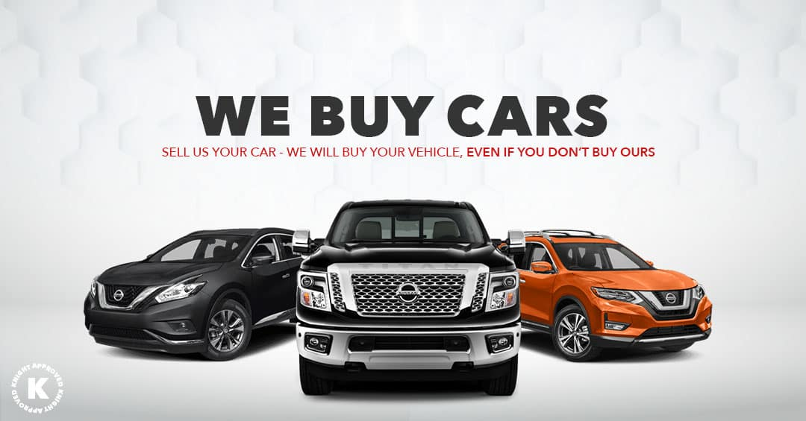

Cars are like our children. We bring them right into our lives with desires and also dreams. After serving for several years, it is tough to choose if to allow go of the vehicle or take care of the ongoing problems. Do not stress, with cash for Volkswagen automobiles Perth; we pay you top dollar for any old Volkswagen no matter its condition. Despite the many times you take care of troubles with your lorry, there is always one thing or the other.
You obtain attracted and ultimately, despair. Severe, however true, your vehicle can not go permanently. Nowadays, it is simple to obtain cash for Volkswagen cars. Let's take a look.
The final decision to sell your made use of car follows rounds of ideas. It all starts with searching for an excellent investor who can get you the most effective worth.
Previously it was challenging to market a used car, considering that problems, exposure to fire, and scraps of car components were not thought about.
These days traders favour any used automobile. You can conveniently trade your Volkswagen for some cash. Seek the below advantages in an investor and also make a notified decision.
1 - Search for a trader that uses a fixed amount, right from the first day. In the automobile company, there is no such thing called modified costs. If a trader fulfils immediate cash guarantees as well as also offers a good value for your auto, take words ahead.
2 - Secondly, check the service. Select an investor who can take away your cars and truck within two business days with no additional cost.
3 - Offered the introduction of technology, you need to make money directly on the spot. After the trader has performed the analysis, evaluation, as well as analysis of the documents, you either earn money using cheque or through NEFT.
4 - A rewarding trader will certainly not request expensive repair services before buying. Find the one who is keen to make a trade with your used auto's ongoing damaged condition.
5 - For investors on the internet, examine the customer testimonials as well as connect to the best one.
6 - Even if your Volkswagen is no more in operating terms, private parts can still be useful. Learning more about the inner parts of the auto can be lengthy and laborious. An investor who can use a reasonable explanation, component by part, and also accepts value all the parts made use of in various other cars must be a selection.

You will certainly be stunned to find out that uninsured Volkswagen automobiles are additionally cost special rates today. So what if your car does not have insurance? Does that suggest it is a failure?
Assessment for the majority of investors is not based upon insurance protection. What happens if your insurance provider proclaims your car a total loss?
Well, because of instance, one of the most uncomplicated tasks would certainly be a demand to preserve the salvage title. In such an instance, the insurance company will certainly send you a pre-accident worth for your vehicle as well as a check.
The check amount, nevertheless, will certainly consist of all kinds of the deductibles as well as anticipated earnings. It will certainly then be effortless to get money for your Volkswagen cars.